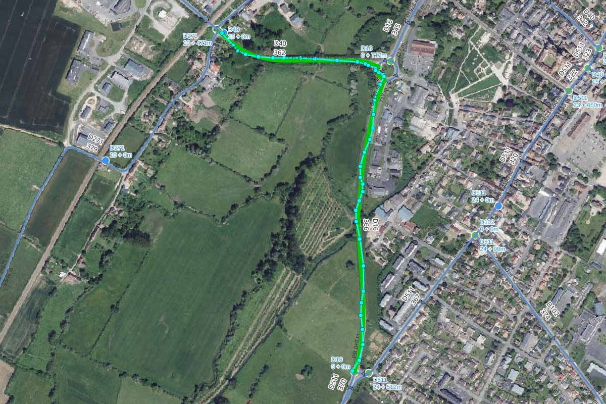
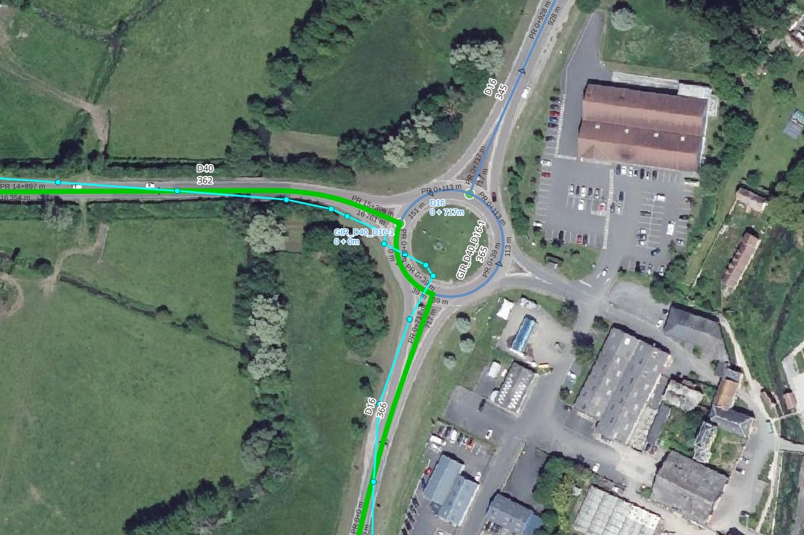

Useful functions#
The road_graph schema provides SQL functions which can be used directly in your queries,
for example in the QGIS Browser panel (right-click on the PostgreSQL connection or schema, then Execute SQL…),
in psql or in a virtual layer built on a PostgreSQL query.
The examples below use the coordinate reference system EPSG:2154 and the road D613
of the test data of the plugin: the values can be slightly different in your database.
Linear referencing functions#
| Function | Usage |
|---|---|
| get_reference_from_point | References of a point |
| get_road_point_from_reference | Point corresponding to references |
| get_road_substring_from_references | Line between two references |
| get_spatial_road | Geometry of a whole road, with the cumulative distances as measures |
Get the references of a point#
road_graph.get_reference_from_point(_point, _road_code, _use_cache) returns the references of a point,
as a JSON object:
1 2 3 | |
1 2 3 4 | |
_point: the point, in the coordinate reference system of the road graph,_road_code(optional): the code of the road to use. If it is not given, the closest road is used. Give it to choose the road of a point located near an intersection,_use_cache(optional,Falseby default): used internally to speed up the calculation for many points of the same road.
The function returns NULL if no road is closer than 50 m from the point.
Example: get the references of all the features of a point layer, without storing them:
1 2 3 4 5 6 7 | |
Get a point from references#
road_graph.get_road_point_from_reference(_road_code, _marker_code, _abscissa, _offset, _side) returns the point
corresponding to the given references, in the key geom of a JSON object (GeoJSON geometry):
1 | |
1 2 3 4 5 | |
_offset: distance in meters from the road axis. Use0for a point on the road,_side:leftorright, in the direction of the road.
To get a PostGIS geometry:
1 2 3 | |
Get a line between two references#
road_graph.get_road_substring_from_references(_road_code, _start_marker_code, _start_marker_abscissa,
_end_marker_code, _end_marker_abscissa, _offset, _side, _from_first_edge_start, _to_last_edge_end)
returns the line of the road between two references, in the key geom of a JSON object:
1 2 3 4 5 | |
- the result is a MultiLineString: the road can be made of several parts, for example on both sides of a roundabout, which has its own road code,
_offsetand_side: to shift the line from the road axis, e.g.3andleftfor a painting on the left side,_from_first_edge_startand_to_last_edge_end(optional,Falseby default): extend the line to the start of the edge of the start references, and to the end of the edge of the end references,- the start references must be before the end references along the road, else an error is raised. If the start marker is before the first marker of the road, the line starts at the start of the road, and if the end marker is after the last marker, the line ends at the end of the road.
Get the geometry of a road with measures#
road_graph.get_spatial_road(_road_code) returns the geometry of the whole road, as a MultiLineString
with measures (M): the measure of each vertex is its cumulative distance from the start of the road.
It can be used with the PostGIS functions of linear referencing, for example ST_LocateAlong:
1 2 3 | |
Business data functions#
These functions update the business tables listed in the managed_objects layer.
They are described in the page Managed objects:
| Function | Usage |
|---|---|
update_table_references_from_geometries |
Calculate the references of the features of a table from their geometries |
update_table_geometries_from_references |
Calculate the geometries of the features of a table from their references (same page) |
add_managed_object_reference_fields |
Add the reference fields to a table |
add_managed_objects_triggers |
Create the triggers calculating the references automatically |
get_editing_session_impacts |
Get the impacts of an editing session on the roads, used by the merge to update only the impacted objects |
GPS tracks: from a GPX file to the road references#
A GPS track recorded on the road, for example with a smartphone and exported as a GPX file, is never exactly on the road graph edges: the GPS precision is usually between 5 and 15 meters.
Two functions allow to transform such a track into road references:
road_graph.get_snapped_line_from_trackbuilds a line snapped on the road graph edges from the imprecise GPS track,road_graph.get_road_sections_from_snapped_linereturns the ordered list of the roads followed by this line, with the start and end references (marker and abscissa) for each road.
Tip
Both steps can also be run on a whole layer of tracks in QGIS, without writing SQL, with the Processing algorithm Get road sections from a line (GPS track).
Import the GPX file in PostgreSQL#
A GPX file can be opened in QGIS with a drag & drop: choose the tracks layer.
Then import it in the PostgreSQL database with the QGIS Browser panel: drag & drop the layer
from the Layers panel onto the target schema of your PostgreSQL connection.
The Processing algorithm Export to PostgreSQL can also be used.
The import can also be done with ogr2ogr:
1 2 | |
Tip
The tracks can stay in the GPS projection EPSG:4326: the functions reproject them automatically
to the road graph projection. A geometry without SRID is considered to be already
in the road graph projection.
Snap the track on the road graph#
1 2 3 4 5 6 7 8 9 | |
Only the first parameter is required:
| Parameter | Default | Description |
|---|---|---|
_track |
The GPS track: a linestring or a multilinestring, in any projection | |
_densify_distance |
2 |
Distance in meters between the points added to the track before snapping them |
_max_distance |
25 |
The track points further than this distance (meters) from any edge are ignored |
_road_change_penalty |
100 |
Penalty applied each time the road changes. Increase it if the result still has zigzags |
The function returns a multilinestring in the road graph projection, which follows exactly the edges geometries, in the direction of the track.
In the example below, the GPS track and its points are displayed in cyan, and the snapped line in green.
The track goes from the road D40 to the road D16 through the roundabout GIR_D40_D16-1:

Near the roundabout, the GPS track cuts the curves and crosses the roundabout, whereas the snapped line follows the edges of the 3 roads:

How does it work?
- The track is densified with a point every
_densify_distancemeters. - For each point, all the roads closer than
_max_distanceare candidates. - Simply taking the closest road for each point would produce zigzags between two close roads
(parallel roads, intersections, roundabouts). Instead, the function searches the sequence of roads
which minimizes, for the whole track:
- the distance between the points and their road (multiplied by
_densify_distance, which gives approximately the surface in m² between the track and the roads), - plus
_road_change_penaltyeach time the road changes between two consecutive points.
- the distance between the points and their road (multiplied by
- Each point is then snapped on the closest edge of its road. The small back and forth movements created near the intersections are removed.
- If two consecutive edges are not connected, for example when a short roundabout section has been skipped, the gap is filled with the shortest path of maximum 5 edges. If no path is found, a new part is created in the multilinestring.
- The result is built from the edges geometries, from node to node.
Get the road sections references#
1 2 3 4 5 6 7 | |
The function returns one line per road section, ordered along the line:
| road_order | road_code | start_marker | start_abscissa | start_cumulative | end_marker | end_abscissa | end_cumulative | direction | length |
|---|---|---|---|---|---|---|---|---|---|
| 1 | D40 | 14 | 905.27 | 16361.8 | 15 | 396.15 | 16761.4 | downstream | 399.6 |
| 2 | GIR_D40_D16-1 | 0 | 0 | 0 | 0 | 39.17 | 39.17 | downstream | 39.17 |
| 3 | D16 | 0 | 716.82 | 716.82 | 0 | 1.62 | 1.62 | upstream | 715.19 |
start_marker&start_abscissa: the references of the section start, e.g.14+905.27,end_marker&end_abscissa: the references of the section end,start_cumulative&end_cumulative: the distances from the road start,direction:downstreamif the line follows the road direction,upstreamotherwise,length: the section length in meters,geom: the section geometry (linestring).
The second parameter _tolerance (default 1 meter) is the maximum distance between the line and the edges.
The line must follow the road graph edges: use the result of get_snapped_line_from_track.
Process all the tracks of a table#
1 2 3 4 5 6 7 8 9 10 11 12 13 14 15 16 17 | |
Limitations#
- A U-turn in the middle of an edge is not kept: the line leaves the edge by the node it came from.
- With a very imprecise track (more than ~10 meters) in complex areas like highway interchanges,
the result can contain wrong ramps, mainly at the track start or end.
Increase
_road_change_penalty, or cut the track ends. - The points further than
_max_distancefrom the road graph are ignored. If the track leaves the road graph for a long distance, the result can be split into several parts.